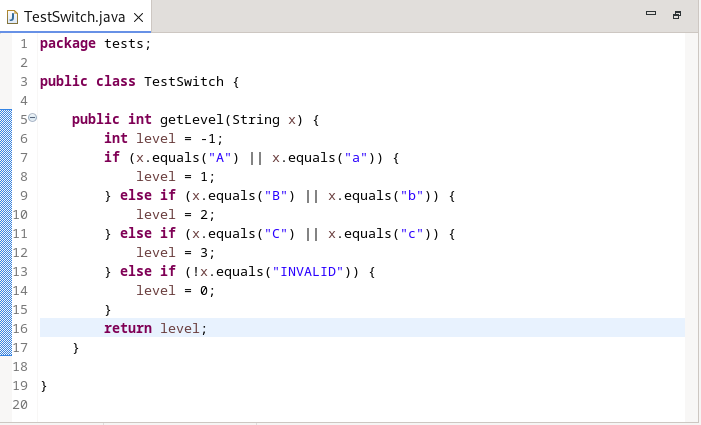
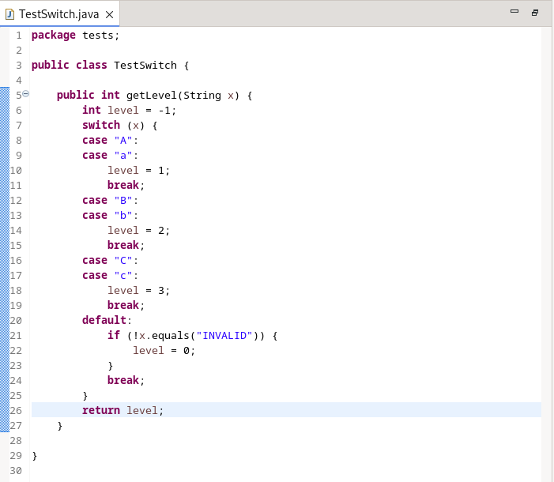
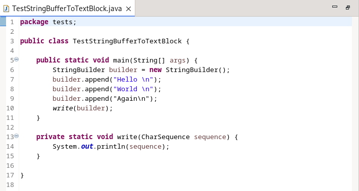
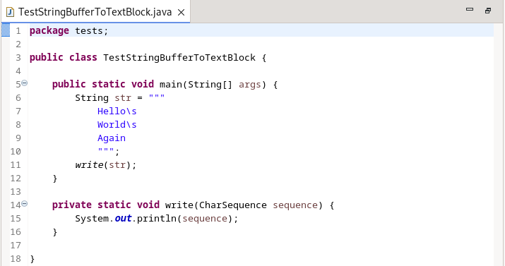

JUnit |
|
Java Editor |
|
| Enhance if/else to switch CleanUp |
The clean-up to convert an if/else-if/else block into a switch has been enhanced to support String literals and Enum constants. As before, the if/else-if/else block must have at least 3 blocks and must look for constant expressions except for the last block which can be put into the default case.
For a String variable, each if/else expression can check using the String.equals() method. For an Enum the code simply uses the == operator. Use of the || operator is allowed to check multiple values and corresponds to a fall-through in the resultant switch statement. To use the clean-up, go to Source > Clean Up > Code Style page and select: Convert if/else if/else chain with 3 blocks min to switch. For example, performing the clean-up on the following:  will result in:  |
| Enhance StringBuffer to Text Block |
The clean-up to convert a StringBuffer or StringBuilder append sequence to Text Block has been enhanced to recognize when the instance is used to supply a String or CharSequence method argument. In the past, an explicit toString() call was required after the append sequence to trigger the clean-up if the StringBuffer or StringBuilder instance wasn't further appended or did not make other method calls that made the conversion to Text Block not possible.
To use the clean-up, go to the Java Features tab of the clean-up configuration dialog and under Java 15, select: Convert String concatenation to Text Block plus Include StringBuffer or StringBuilder concatenations. For example, performing the clean-up on the following code which used to do nothing:  will result in:  |
Java Views and Dialogs |
|
Java Compiler |
|
| Removed support for souce, target and release Java 7 and below |
The following compiler options are now supported only for Java 8 and above:
--source <release>
--target <release>
--release <release>
I.e., from Eclipse 4.33 onward, the Eclipse IDE and This is the equivalent of Java 21's |
Java Formatter |
|
Debug |
|
JDT Developers |
|